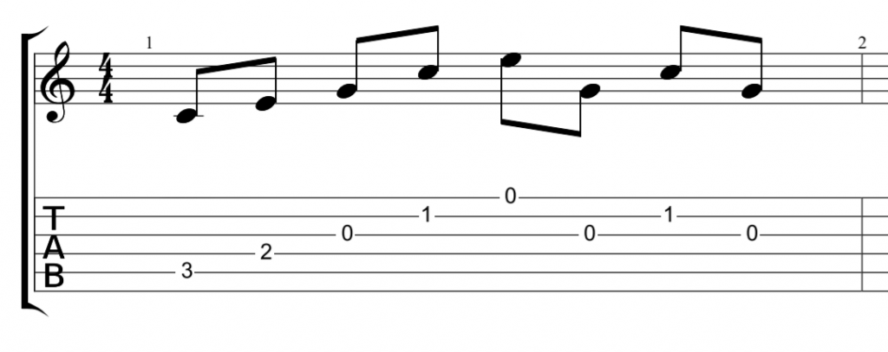
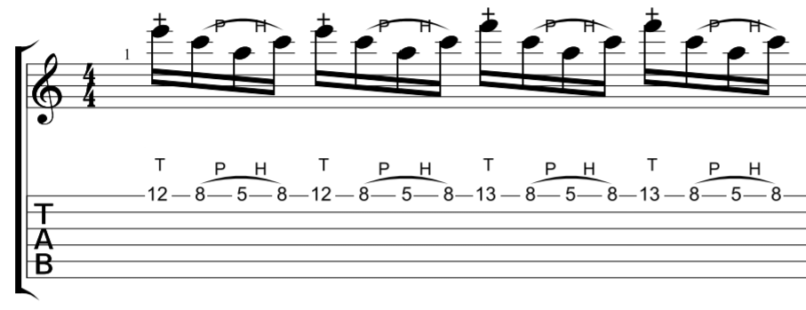

Video Introduttivo
Cos'è una tablatura?
Una tab indica quali note suonare e alcune tecniche esecutive, specificandone la corda e la posizione delle dita della mano sinistra sulla tastiera, mediante i numeri che indicano i tasti della relativa corda da suonare (il numero 0 indica la corda vuota).
- In una tab non è specificata la velocità di esecuzione del brano e in alcune nemmeno la durata di ciascuna nota o pausa.
- Non si ha nessuna indicazione su quale dito della mano usare e non viene definito il tipo di plettrata da usare.
La tab è formata da sei linee parallele orizzontali (detta anche esagramma) che rappresentano le sei corde della chitarra. Di solito all'inizio del rigo sono scritte le lettere che indicano il tipo di accordatura del brano.
La rappresentazione della chitarra è invertita, la corda più grave è scritta in basso, mentre quella più acuta è scritta in alto. QUELLA PIù VICINA A NOI E IN BASSO ALLA TAB è LA 6a CORDA.
Come si legge?
I numeri scritti rappresentano i tasti della relativa corda da suonare.
Con il numero 0 si intende la corda a vuoto, quindi senza alcun dito.
Nell'esempio qui sotto si suonerà la seconda corda della chitarra prima come corda vuota e poi nei primi quattro tasti
E|------------------------|
B|---0--1--2--3--4--------|
G|------------------------|
D|------------------------|
A|------------------------|
E|------------------------|
Se i numeri sono incolonnati, allora le corde devono essere suonate contemporaneamente.
E|------------------------|
B|------2-----------------|
G|------2-----------------|
D|------2-----------------|
A|------------------------|
E|------------------------|
Questo è un accordo parziale di La Maggiore, le corde dove non c'è nessun simbolo non vanno suonate.
Un accordo di Do Maggiore arpeggiato sarebbe così:
Le lettere iniziali indicano la sigla inglese delle lettere quindi è bene sapere che
- A = La
- B = Si
- C = Do
- D = Re
- E = Mi
- F = Fa
- G = Sol
Segni e significato:
X: quando ci sono delle x vuol dire che l'accordo deve essere stoppato con il palmo della mano destra, dando un suono stile percussione.
Ghost Notes (note fantasma): sono segnate con il simbolo X, e significa che le note vanno smorzate mettendo le dita della mano sinistra sulle corde e suonando.
Hammer-On(caduta a martello): è rappresentata come una H sopra una legatura, si usa per passare da una nota grave ad una più acuta sulla stessa nota utilizzando la tecnica del legato (cioè suonare due note usando soltanto una volta la mano destra). Per fare ciò bisogna suonare la prima nota e successivamente (senza usare il plettro) con l'altro dito picchiare sulla corda stessa suonanto la nota più acuta.
Pull-Off(strappare): Tecnica opposta all’ hammer–on, è rappresentata come una P sopra una legatura, che si utilizza per passare da una nota acuta ad una più grave, utilizzando anche qui il legato tra le due note. In questo caso la nota più acuta va suonata con il plettro lasciando subito dopo il dito con un movimento appunto detto “strappo” in modo da far suonare la nota successiva più grave dove è posizionato l’altro dito o facendo suonare la corda a vuoto.
Hammer-On/Pull-Off: queste due tecniche si possono combinare per ottenere un alternanza chiamata "legatura combinata" dove si sussegue da note di diversa altezza sulla stessa corda.
Falsa Legatura: si suona una nota su di una corda e si esegue un hammer-on su un'altra corda. In questo modo la prima nota continua a risuonare (Eco) mentre sta suonando la seconda nota.
Tapping: questa tecnica utilizza sia l'hammer-on che il pull-off, ma in questo caso si aggiunge la mano destra che colpira con un dito direttamente la tastiera, in modo da poter suonare a velocità superiori intervalli alti. Consiste nel picchiare con il dito della mano destra la corda e subito dopo lasciarlo strappandola in modo da far suonare la nota dove è già premuto il dito della mano sinistra.
Slide: prevede che da una nota tu scivoli a una successiva o precedente tenendo pressione sulle corde costante, in modo veloce e deciso. Se rinforzi la nota risuonandola dopo essere arrivati è un picked slide, se sopra ha una legatura devi farlo senza suonare così è un legato slide.
Slide ascendente:
Slide discendente:
Unspecified Slide Ascendente: dalla nota segnata fai scivolare verso destra il dito per alcuni tasti prima di lasciarlo andare.
Unspecified Slide Discendente: dalla nota segnata fai scivolare verso sinistra il dito per alcuni tasti prima di lasciarlo andare
Unspecified Slide Ascendente: non si sa da dove si parte ma da un punto che vuoi scivola il dito fino alla nota scritta, in questo caso da sinistra verso destra.
Unspecified Slide Discendente: non si sa da dove si parte ma da un punto che vuoi scivola il dito fino alla nota scritta, in questo caso da destra verso sinistra
Bending(piegatura della corda): molto usata, la corda che andremo a suonare verrà tirata con il dito della mano sinistra con un movimento verticale verso lalto o verso il basso facendo salire il suono.
- Il bending può variare dal salire di un quarto di tono 1/4 fino a tre toni con il numero 3 accanto alla freccia.
- La scritta "full" significa che dovete suonare un bending di un tono più alto rispetto alla nota scritta.
nel caso in cui troviamo una piccola nota "tagliata" si chiama accacciatura accanto alla nota principale, questa nota va suonata prima e dura una frazione di secondo. Viene anche chiamata (nota di abbellimento)
Tipi di bending:
Bending/release: in questo caso dopo aver raggiunto la tonalitò desiderata con il bending, devi fare il movimento inverso e rilasciare la corda fino alla posizione di partenza.
Pre-bending o "Ghost Bending": la corda viene prima tirata e successivamente suonata senza rimuovere pressione del dito.
Pre-bending/release: si suona la nota innalzata con il bending, con un rilascio progressivo della tensione fino a tornare alla nota di partenza.
Pre-bending/bending: si esegue un pre-bending e, subito dopo aver suonato la nota, fare un bending alzando ancora di più la corda.
Doppio bending: qui suoni un bending e al termine della durata di questa nota fai un altro bending tirando ancora di più su la corda di tonalità (di mezzo tono nell'esempio qui sotto).
Bending legato: una successione di bending legati tra loro suonando una sola volta la corda per poi farla ondulare su e giù le volte che sono rappresentate.
Unison Bend: è un bending che produce un suono della stessa identica altezza di un altra corda. Bisogna suonare entrambe le corde mantenendo le dita su entrambe le corde e note, per poi fare un bending su quella con al freccia alzandola fino ad arrivare alla stessa nota dell'altra.

Vibrato: si effettuano piccoli spostamenti della corda su e giù prolungandone la durata e rendendola più espressiva. Fai piccolissimi bending su e giù veloci come se il dito stesse tremando.
Tremolo-bar "Leva del Vibrato": in questo caso per avere l'effetto del vibrato viene usata la leva. Muovila più volte con la mano destra cambiando la tensione della corda.
La leva si può anche usare per passare da una nota più acuta ad una più grave, premendo la leva verso i pickup.
Mentre per passare da una nota più grave ad una più acuta, dobbiamo già tenere premuta la leva prima di suonare la corda per poi lasciare la leva subito dopo aver suonato la corda.
Trill/o: consiste nell'alternare velocissimamente e ripetutamente la nota indicata e la piccola nota tra parentesi, con dei velocissimi hammer-on e pull-off.
Tremolo Picking: consiste nel sonare, in maniera continua, una nota, il più velocemente possibile. Quindi plettra in modo alternato usando il polso velocemente.
Palm-Muting: quando suoni il palmo della mano destra appoggia sulle corde che suoni vicino al ponte per avere un suono smorzato (Usato spesso nell'Hard Rock o Heavy Metal).
Muffled strings: si ottiene trascinando il plettro su corde smorzate fino a suonare la corda dove abbiamo posizionato il dito che vogliamo far suonare.
Staccato: si ottiene stoppando la nota appena suonata con la mano destra facendo cessare immediatamente il suono avendo così un suono spezzato.
Armonici Naturali(N.H): si ottengono sfiorando le corde con un dito esattamente sul ferretto che divide i tasti. Sono più facili da suonare tra il 5o 6o, 7o 8o e 12o 13o tasto..
Armonici Artificiali(A.H): si ottiene con la mano destra con il pollice che andrà a sfiorare la corda appena suonata senza stopparla. !Questa è una tecnica avanzata e molto complessa!